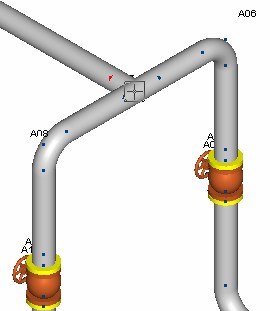
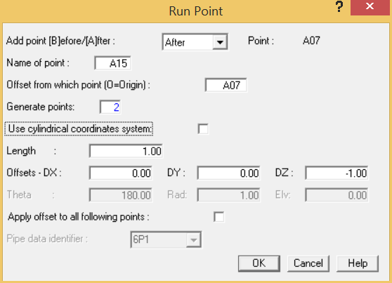

Select View > Orientation > 180 deg ISO.
- At point A07, click the branch arrow for the tee lying on segment B so that the inserted run points are added along the branch and not the header.
Select the branch arrow at Tee point A07
-
.png) Inserting a single run point or
multiple run points is performed in the Run dialog. Select
Insert > Piping Components > Run.
Inserting a single run point or
multiple run points is performed in the Run dialog. Select
Insert > Piping Components > Run.

- By default AutoPIPE inserts one point B04 at one-half the distance to B01. You will instead have AutoPIPE insert two equally spaced points between A07 and B01. These points will automatically be named B04 and B05. In the Generate points field, input 2 to generate two new points.
- Tab once to leave the Generate Points field. AutoPIPE recalculates the length to 10.67 feet {3250} mm (which is 1/3 the distance to point B01).
- Press OK to accept the values and close the Run Point dialog.
Two equally spaced points are created on segment B, the frame structure can now be placed with respect to these points.